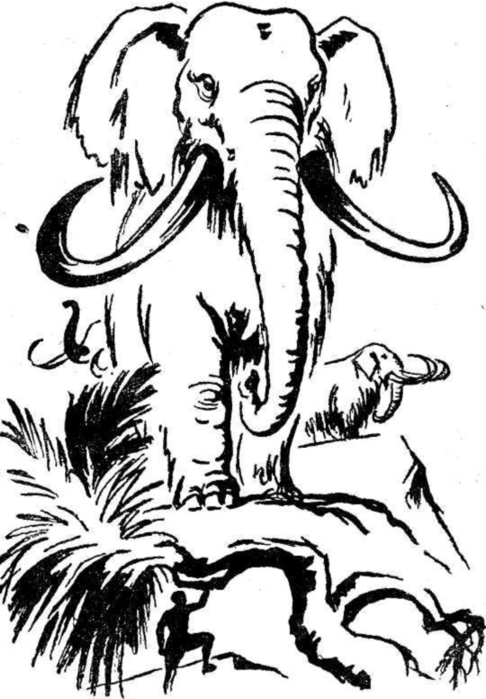

Yarım saat daha bu kemik yığınları arasında dolaştık. Sonsuz bir merakla mütemadiyen ileriye doğru gitmek istiyorduk. Kim bilir ilim bakımından daha ne kadar paha biçilmez hazinelerle doluydu burası. Doymak bilmez bir haldeydik.
İki kilometrelik bir yürüyüşten sonra, muazzam bir ormanın kenarına ulaştık. Fakat bu bir mantar ormanı değildi. Üçüncü jeolojik devre ait bitkilerden meydana gelmişti. Bugün cinsi kaybolmuş olan palmiyeler, palmasit'ler, çamlar, porsuk ağaçları, serviler, mazı ağaçları gözümüze çarpıyordu. Bu dev ağaçlar, birbirlerine sarmaşıklarla kenetlenmişlerdi. Yer, çeşitli yosunlarla bir halı gibi kaplanmıştı. Bir iki dere, ağaçların arasında kıvrıla kıvrıla, tatlı mırıltılarla akıyordu. Bunların kıyılarında dev fujerler yetişmişti. Bütün bu ağaçların müşterek hususiyeti, güneşin hayat veren ışınlarından mahrum oldukları için, gri renkte oluşlarıydı. Yapraklar da yeşil değildiler. Balmumundan yapılmış gibiydiler.
Hayran bakışlarımı etrafta dolaştırarak, dev ağaçların altında ağır ağır ilerlemeğe başladık. Fakat, içimde isim veremediğim bir korku da vardı. Acaba bu ağaçların arasında tufandan önceki devirlerde yaşamış olan yaratıklarla karşılaşır mıydık? Bu pekâlâ mümkündü. İçinde bulunduğumuz ormanda bu yaratıkların yaşamaları ve beslenmeleri için her şey mevcuttu. Fakat bu korku, hayalimin fazla çalışmasından başka bir şey olamazdı. Dayıma bahsetmeğe değmezdi bile.
Yürümeğe devam ettik. Birkaç yüz metre sonra, birdenbire durdum. Heyecanla dayımı kolundan tuttum.
Ağaçların arasında süzülebilen ışık, her şeyi kolaylıkla görmeğe yetişiyordu. İlkönce hayal zannetmiştim ama, gerçekti... Ağaçların arasında iri vücutlu yaratıklar kımıldıyordu. Evet! yanılmıyordum!... Gördüklerim hayal değildi. Büyük bir mastodont sürüsü ormanda dolaşıyordu. Hem de canlı mastodont'lar...
Filin büyük babası olan mastodont'lara ait ilk fosil 1801 de Ohido bataklıklarındaki kazılarda bulunmuştu. Müzede iskeletini görmüş olduğum bu dev filin, büyük bir sürü halinde karşıma çıkması beni şaşırtmıştı. Çıkardıkları gürültü bulunduğumuz yere kadar aksediyordu. Dallar kırılıyor, yaprak yığınları fırın gibi ağızlarında kayboluyordu.
Dayım da sürüyü görmüştü. Heyecanlı bir sesle:
- Haydi! yanlarına gidelim! dedi. Korkuyla itiraz ettim:
- Silâhımız yok... Bu dev yaratıkların arasında mahvoluruz!... Öfkelenecek olurlarsa, hiçbir insan bunlarla mücadele edemez!...
- Hiçbir insan bunlarla başa çıkamaz demekle yanılıyorsun Axel!. Dikkatli bak!. Sürünün arasında, bize benzeyen birisi var!.. Bir insan var orada!..
İnanmayarak, işaret ettiği tarafa baktım. Fakat, dayıma karşı haksızlık ettiğimi anlamakta gecikmedim. Hakikaten beş yüz metre kadar ilerimizde, kocaman bir dala dayanmış dev yapılı bir adam, mastodont sürüsüne gözcülük ediyordu. Boyunun dört metreyi aştığını uzaktan tahmin ettim. Bu hepimizin anladığı manada bir çobandı.
Olduğumuz yerde şaşkın bir halde, taşlaşıp kalmıştık.

Orada daha çok durmamız tehlikeli olabilirdi, Görülürsek mahvolurduk. Kaçmamız lâzımdı. Dayımı elinden tutup, çekerek:
- Gelin! gelin!... diye bağırdım. Kaçalım!
Dayım ilk olarak bana itiraz etmedi.
On beş dakika sonra tehlikeden tamamıyla uzaklaşmıştık. Artık görülmeyeceğimize emin olduktan sonra ağır ağır ilerlemeğe başladık.
Burası Graüben körfezine çok benziyordu. Kayaları ve bunların arasından şırıldayarak geçen birçok minik dere bana orasını hatırlatıyordu. Çok geçmeden dayımın da ayni şekilde düşündüğünü anladım. Bu monoton manzara insanı aldatıyordu. Dayıma:
- Fırtınanın tesiriyle aynı noktadan karaya çıktığımızı zannetmiyorum, dedim. Bununla beraber Graüben körfezinden çok uzakta olmadığımızı tahmin ediyorum, içimden bir his, şu köşeyi, dönünce, Graüben körfezini göreceğimizi söylüyor.
- Öyleyse bu geziye devam etmemize lüzum yok. Sala dönelim. Fakat iyi düşün Axel. Acaba yanılmıyor musun?
- Yanılıp, yanılmadığımı söylemek çok zor. Kayalar ve dereler birbirlerine o kadar benziyorlar ki...Fakat, Hans'ın salı inşa ettiği küçük koyu tanır gibi oluyorum.
- Yanılmadığıma eminim Axel. Aynı noktada karaya çıkmış olsaydık, izlerimize rastlamamız icap ederdi. Dikkatle baktığım halde hiçbir şey göremiyorum.
Kumların arasında parlayan bir cismin üzerine atılarak:
- Fakat ben görüyorum! diye cevap verdim.
- Nedir o?
Yerden aldığım hançeri dayıma uzatarak:
- İşte dedim. Dayıma alaycı bir sesle:
- Yanında hançer var mıydı? diye sordum.
- Böyle bir hançerim yoktu. Fakat, bu sizin olabilir.
- Benim de yanımda böyle bir hançer yoktu. İşte bu tuhaf!...
- Belki de Hans düşürmüştür.
Başını inanmadığını belli eder tarzda sallayan dayım.
- Bu hançerin Hans'a ait olduğunu zannetmiyorum, dedi.
Kısa bir süre hançeri dikkatle tetkik ettikten sonra.
- Bu, on altıncı asırda asilzadelerin kullandığı cinsten bir hançer, dedi. Bilhassa İspanyolların kullandıkları cinsten olduğunu söyleyebilirim.
- İnanılmayacak bir şey bu!...
- Yer yer paslanmış olduğunu görüyor musun? Dayım iyice heyecanlanmıştı. Titrek bir sesle:
- Bizi hedefimize götürecek yolun üzerindeyiz!.. diye bağırdı. Hançerin üzerindeki yazıları okuyabiliyor musun?.. Arne Saknussemm!.. Bu büyük bilgin bize yine doğru yolu gösteriyor!.. Her tarafı dikkatle arayalım!.. Muhakkak geçmiş olduğu yola başka bir işaret koymuş olacaktır!..
Deniz kıyısından ayrılarak, granit duvarı dikkatle gözden geçirmeğe başladık. Arzın derinliklerine ulaşan bir geçidin kapısını arıyorduk.
Ağır ağır yürüyerek araştırmamıza devam ettik. En sonunda, granit duvarla sahilin birbirlerine çok yaklaşmış olduğu bir noktaya geldik. Dalgalardan sıçrayan sular, granit duvarı ıslatıyorlardı. İşte tam burada iki metre genişlikte bir çatlak gördük. İki kaya arasına sıkışmış gibi görünen bu aralık, çok karanlık bir tünelin başlangıcıydı. Granitin, insan boyu yüksekliğindeki bir yerinde, şu harfler açıkça okunuyordu:
Dayım heyecanla:
- İşte yine Saknussemm! diye bağırdı.